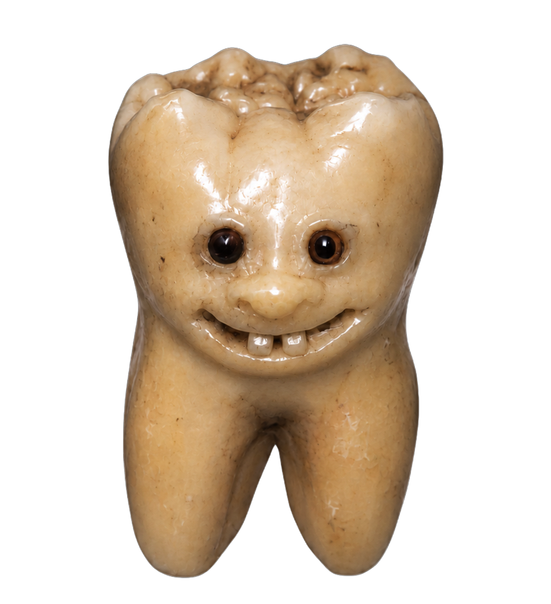
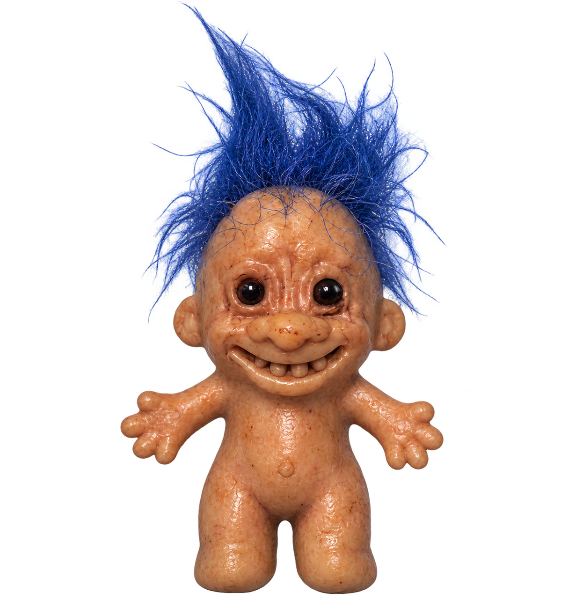

toool


הדמיה בלבד — שום דבר כאן לא הוחל על האתר. כל תא הוא מסך שלם מוקטן: הסרגל משמאל,
העמוד מימין, וחלון התוצאה במרכז — כי התוצאה היא החלון, לא עצם קטן.
היום החלון פשוט מופיע במקומו (mixpop, קפיצה מ-80% ל-100% ב-0.34 שנ׳), בלי מאיפה.
כאן הוא מקבל מקום לידה: הקערה שהמשתמש בהה בה 30 שניות. כל תא מריץ קודם את
הזנב של הרצף האמיתי — הקערה מתמלאת → האטה → READY → הכף עולה → ורק אז החלון יוצא.


Insect accessory
A wing dryer is an object used for drying the wings of large insects. The body is rounded and compact, with a raised upper section. The insect is placed on the surface while the wings dry.
 02
02
03
04
05